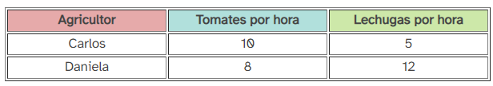

Ventaja comparativa y ganancias del comercio
Consideremos a dos agricultores, Carlos y Daniela, que cultivan tomates y lechugas en sus respectivas fincas. Ambos son eficientes en la producción de ambos cultivos, pero cada uno tiene una habilidad especial. Carlos, por su experiencia y las características de su tierra, puede cosechar tomates en menos tiempo que Daniela. Por otro lado, Daniela posee una variedad de lechugas únicas que requieren cuidados específicos y que ella domina a la perfección.
| El coste de oportunidad de producir un bien se define como la cantidad de otro bien al que se renuncia para producirlo |
En este caso, si Carlos decide dedicar más tiempo a cultivar lechugas, está renunciando a la oportunidad de cosechar más tomates. Del mismo modo, si Daniela decide cultivar tomates, está dejando de lado la producción de sus preciadas lechugas.
Para entender mejor este concepto, imaginemos que ambos agricultores dedican una hora a trabajar en sus cultivos. Supongamos que Carlos puede cosechar 10 tomates en una hora y 5 lechugas, mientras que Daniela puede cosechar 8 tomates y 12 lechugas.

Si Carlos decide dedicar una hora más a cultivar lechugas, dejará de cosechar 10 tomates. Por lo tanto, el coste de oportunidad de una lechuga adicional para Carlos es de 2 tomates. En cambio, si Daniela decide cultivar un tomate adicional, dejará de cosechar 1.5 lechugas. El coste de oportunidad de un tomate adicional para Daniela es de 1.5 lechugas.
Como podemos observar, el coste de oportunidad de producir un tomate es menor para Carlos que para Daniela. Esto significa que Carlos tiene una ventaja comparativa en la producción de tomates. Por otro lado, Daniela tiene una ventaja comparativa en la producción de lechugas.
Al especializarse en la producción de los bienes en los que tienen una ventaja comparativa, tanto Carlos como Daniela pueden aumentar su producción total y mejorar su bienestar económico. Carlos puede concentrarse en la producción de tomates, en los que es más eficiente, mientras que Daniela puede dedicar más tiempo a cultivar sus lechugas especiales. Ambos pueden luego intercambiar sus productos, obteniendo así una mayor variedad de alimentos y a un menor coste.